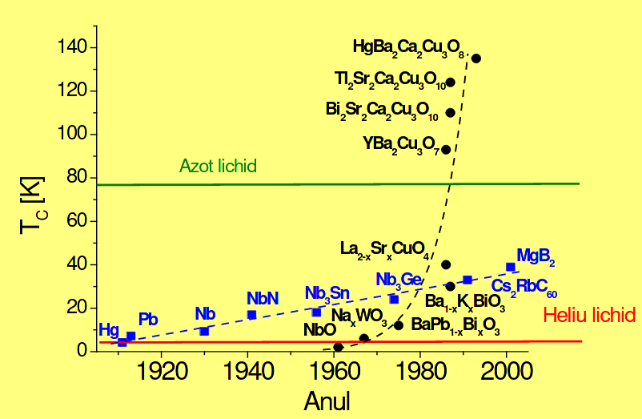
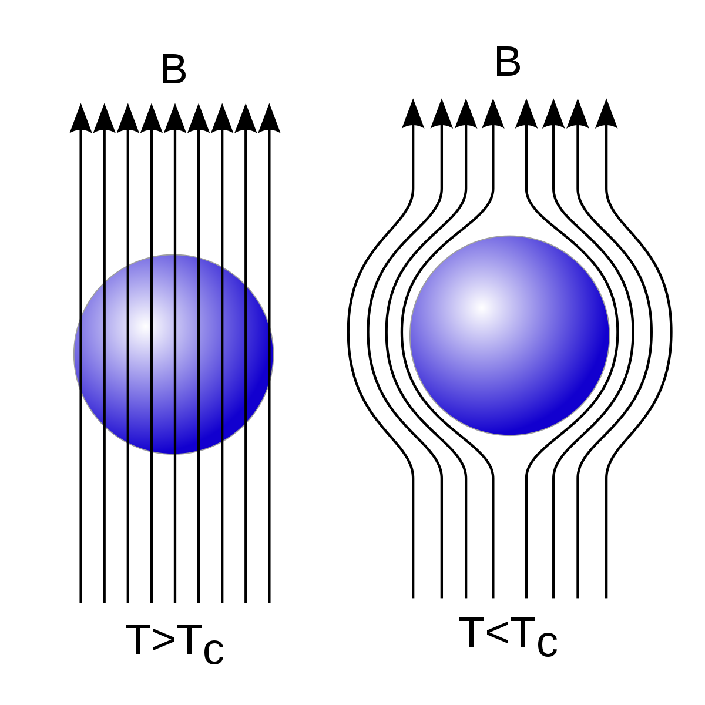

De Stoica Tedy
Supraconductibilitatea este un fenomen în care rezistența electrică a unui material conductor devine zero, dacă temperatura sa este mai mică decât o anumită valoare specifică materialului, numită temperatură critică.
Fenomenul a fost observat pentru prima dată de către Heike Kamerlingh Onnes în 1911. Studiind dependența de temperatură a rezistivității electrice a mercurului a observat că sub o anumită temperatură, apropiată de temperatura heliului lichid (4,2 K), rezistivitatea scade brusc către zero. Ulterior s-a putut determina o temperatură critică pentru diferite elemente chimice simple și compuse.
S-a observat de asemenea că, dacă se aplică unui supraconductor un câmp magnetic, fenomenul de supraconductibilitate dispare la o anumită intensitate a câmpului, numită intensitate (de câmp) critică. Aceasta depinde de asemenea de materialul supraconductorului și de temperatură. Dacă densitatea curentului prin supraconductor, depășește o anumită valoare critică, supraconductibiltatea dispare.
Materiale solide devin supraconductoare numai sub o anumită temperatură critică. Odată ce, într-un inel supraconductor s-a stabilit un curent electric circular, acesta se poate menține infinit în timp, dacă temperatura este menținută și nu intervin câmpuri magnetice puternice. Simultan apare și un cuplu motor difuz circular, ce poate pune în rotație inelul în sens invers curentului. Totodată s-au observat și modificări ale forței gravitaționale în jurul inelului, când acesta este străbătut de curent.
Până în prezent nu s-a putut da o explicație corectă acestor fenomene. Poate cauza acestui eșec este tocmai greșeala marilor fizicieni de a considera așa-zisul "spațiu vid" chiar vid absolut. De curând teoriile asupra eterului au început să fie revizuite și corectate.
S-a observat de asemenea că, dacă supraconductorul este introdus într-un câmp magnetic, fenomenul de supraconductibilitate dispare la o anumită intensitate a câmpului, numită intensitate critică. Aceasta depinde de asemenea de material și de temperatură. Dacă densitatea curentului prin supraconductor depășește o anumită valoare critcă, supraconductibilitatea dispare
Starea supraconductoare a mercurului (TC=4.15 K) a fost descoperită de către fizicinul olandez Heike Kamerlingh Onnes in 1911,la câţiva ani de la prima lichefiere a heliului (1908)de către acelaşi fizician.
| Zinc | 0,88 K |
|---|---|
| Aluminiu | 1,20 K |
| Indiu | 3,41 K |
| Staniu | 3,72 K |
| Mercur | 4,15 K |
| Plumb | 7,19 K |
Cu timpul s-au descoperit materiale care pot fi superconductori la temperaturi din ce in ce mai ridicate
Efectul Meissner (numit și efectul Meissner-Oschenfeld) reprezintă expulzarea liniilor de câmp magnetic ale unui metal dacă acestui metal îi este atribuită o stare de supraconductibilitate. A fost descoperit de Walther Meissner și Robert Oschenfeld în 1933 prin măsurarea distribuției de flux magnetic în afara unor specimene de plumb și de cositor în timp ce acestea erau răcite sub temperatura critică în prezența unui câmp magnetic.
Efectul Meissner permite levitarea unui magnet deasupra unui supraconductor